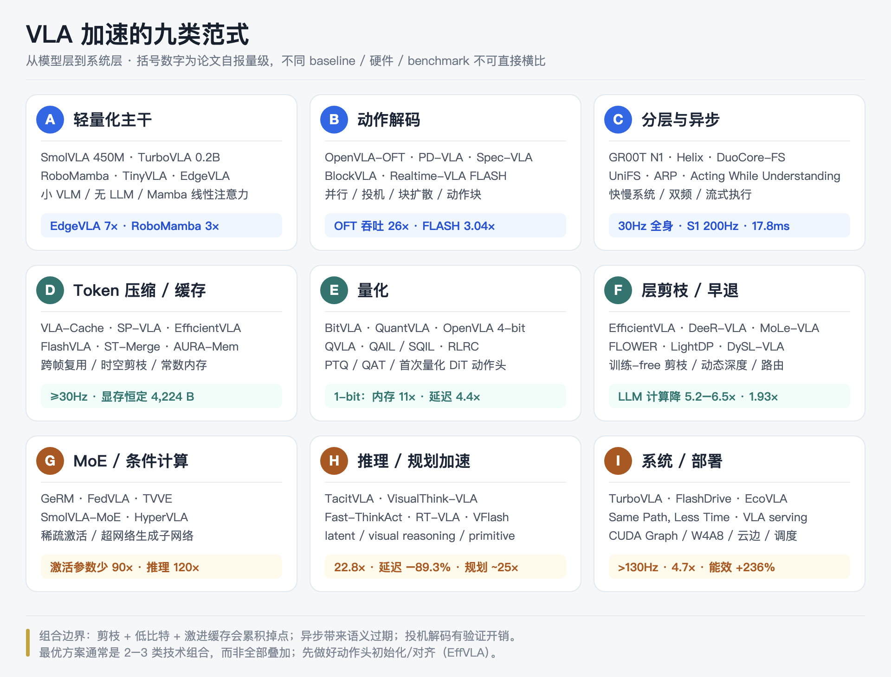

VLA 加速模型全景调研 · 九类范式
范围：除了 Evo-1、TurboVLA、GR00T N1、VFlash 之外，学术界与工业界还有哪些「加速型 VLA」，它们各自加速在哪一层、代价是什么。
说明：所有数字来自论文摘要/正文或综述；不同论文的 baseline、硬件、benchmark 不同，speedup 不可直接横比。
0. 摘要：五条结论
- 加速不是单点技术，而是九类范式：轻量化、动作解码、分层异步、Token 压缩/缓存、量化、层剪枝/早退、MoE、推理加速、系统部署。
- 最大的杠杆往往不是「换更小的模型」，而是：动作头初始化/对齐、并行解码、动作块、异步执行、Token/缓存复用。OpenVLA-OFT 用同一 7B 主干把吞吐提高 26×；EffVLA 发现动作头初始化比 decoder 结构更重要。
- 2025–2026 的主线从「小模型」转向「系统级异步 + 投机/流式解码 + 常数内存」：DuoCore-FS 30Hz、UniFS 17.8ms、FlashVLA ≥30Hz、AURA 常数 4KB 内存、Realtime-VLA FLASH 3.04×。
- 极端压缩已经到 1-bit：BitVLA 全三元参数，内存降 11×、端到端延迟降 4.4×，性能对齐 OpenVLA-OFT。
- 组合有边界：剪枝 + 低比特 + 激进缓存会累积成功率损失；异步会带来语义过期；投机解码有验证开销。最好的方案通常是「2–3 类技术组合」，不是全部叠加。
1. 先统一口径：五种「快」不是一回事
| 指标 | 定义 | 常见报告 |
|---|---|---|
| Latency | 一次策略前向的墙钟时间 | ms |
| Control frequency | 每秒产生/执行多少个动作块 | Hz |
| Throughput | 单位时间能服务多少个请求/动作 | actions/s、tokens/s |
| FLOPs / activated params | 计算量或激活参数量 | × 降低 |
| Memory / VRAM | 权重 + KV cache + 中间激活 | GiB、× 降低 |
| Energy | 每动作能耗 | × 提升 |
论文里常见的「X× speedup」可能是以上任意一种。看到数字先问：相对谁、在什么硬件、什么 batch、什么分辨率、什么 action horizon。
2. 加速范式地图

每一类下面都有代表性模型。下面按家族列。
3. 分家族模型表
3.1 A. 轻量化主干
| 模型 | 规模 | 加速手段 | 报告效果 | 备注 |
|---|---|---|---|---|
| SmolVLA (2506.01844) | 450M | 小 VLM + 层剪枝（N=L/2）+ pixel-shuffle + 异步推理栈 | 与 10× 大的 VLA 性能相当；单 GPU 可训、消费级 GPU/CPU 可部署 | 社区数据，开源 |
| TinyVLA (2409.12514) | ~1.3B（survey 口径） | 紧凑 VLM + diffusion policy 解码器 | 推理更快、无需机器人预训练 | 数据效率优先 |
| EdgeVLA (2507.14049) | ~1B（Qwen2-0.5B） | 小语言模型 + 取消末端执行器位置的自回归 | 推理 7× 加速 | 边缘设备 |
| MiniVLA | ~1B | Qwen2.5-0.5B 小 LLM | 参数降 7× | survey 口径 |
| NORA (2505.xxxx) | ~3B | Qwen2.5-VL-3B + FAST+ tokenizer | 紧凑 3B 主干 | 通用操作 |
| CLIP-RT | ~1B | CLIP 预训练适配 | 参数降 7× | survey 口径 |
| Evo-1 (2511.04555) | 0.77B | InternViT-300M + Qwen2.5-0.5B + pixel-unshuffle + 单次 VLM + flow matching | 16.4Hz / 2.3GB / 真机 78% | 见前一份文档 |
| TurboVLA (2607.27205) | 0.2B | 无 LLM，V+L→A 直接映射 | 31.2ms≈32Hz / 0.9GiB / LIBERO 97.6 | 见前一份文档 |
| RoboMamba (2406.04339) | ~3.2B | Mamba 线性复杂度替代 Transformer | 推理 3× 快；仅 0.1% 参数微调 | 线性序列建模 |
| FlowRAM (2506.16201) | — | Mamba + 区域感知 + flow matching | <4 步生成动作；高精度任务 +12.0% | 流匹配 + 线性主干 |
| HyperVLA (2510.04898) | — | Hypernetwork 生成/激活子网络 | 激活参数 90× 少；推理 120× 快（相对 OpenVLA） | 极端参数效率 |
| LiteVLA | — | 4-bit、纯 CPU | Raspberry Pi 4 可跑 | survey 口径 |
| DiVLA-2B | 1–2B | 小模型 + 高效训练 | 吞吐/成功率可超 7B | survey 口径 |
3.2 B. 动作解码加速
| 模型 | 基座 | 手段 | 报告效果 | 备注 |
|---|---|---|---|---|
| OpenVLA-OFT (2502.19645) | 7B | 并行解码 + 动作块 + 连续动作 + L1 回归 | 动作吞吐 26×；LIBERO 76.5%→97.1% | 最经典的「不改架构」加速 |
| PD-VLA (2503.02310) | ~7B | 把 AR 解码改写为非线性不动点，并行 Jacobi 迭代 | 执行频率 2.52×；training-free | 有数学保证 |
| Spec-VLA (2507.22424) | 7B | 投机解码 + 宽松接受 | 1.42×；接受长度 +44% | 不损成功率 |
| SV-VLA | 7B | 投机 + 闭环验证/偏差触发重规划 | — | survey 口径 |
| BlockVLA (2605.13382) | AR VLA | 块扩散微调（block diffusion） | 比离散扩散 baseline 3.3× | 把 AR 改成块并行 |
| Fast-dVLA (2603.25661) | 离散扩散 VLA | 参数空间解耦 + capability vector 合并 | 实时性能 | 主要解决 SFT 成本 |
| Realtime-VLA FLASH (2605.13778) | 扩散 VLA | 投机推理框架 | 58.0ms → 7.8ms；平均 19.1ms（3.04×） | 大量 full-inference 被投机轮替代 |
| VFlash (2611.08449) | Qwen3-4B + MoonViT | 结构化 primitive 一次前向 + schema 校验 | 3D 点运动预测 ~25×；端到端延迟 -80% | 规划器，不是策略 |
| VOTE | 7B | 整个动作块压成单个 <ACT> token | — | token 级动作压缩 |
| FAST / FAST+ (2501.09747) | π0 | DCT+BPE 动作 tokenization | 训练时间 5× 降低 | 主要加速训练/序列长度 |
| FlowRAM | — | Flow matching，<4 步 | 比迭代去噪快 | 见 A 表 |
| TinyVLA | — | Diffusion policy 解码器 | 一次/少步生成 | 见 A 表 |
3.3 C. 分层与异步
| 模型 | 规模 | 手段 | 报告效果 | 备注 |
|---|---|---|---|---|
| GR00T N1 (2503.14734) | 2.2B | S2 VLM 10Hz + S1 DiT 120Hz，K=4 flow steps，H=16 | 63.9ms/16 actions（L40） | 双系统代表 |
| Helix（Figure） | S2 7B + S1 80M | S2 7–9Hz，S1 200Hz | 200Hz 全身控制 | 产品级双系统 |
| HiRT | — | 低层高频 + 高层低频 VLM | — | 早期分层 |
| RoboDual | ~7B | 通用 VLA + 高频 diffusion specialist | — | 双系统 |
| DP-VLA | ~7B | 双过程：推理器 + 执行器 | — | 推理-执行协同 |
| HAMSTER | — | 高层 VLM 出 2D 路径，低层 policy 执行 | — | 分层 |
| FiS | — | 推理与执行参数共享 | — | 双系统参数共享 |
| DuoCore-FS (2512.20188) | 3B VLM | 异步 fast-slow，whole-body | 30Hz 动作块；比同类 VLA 约 3× | 全身操作 |
| UniFS (2606.22794) | — | 按更新频率分层 VLM 层 | 98.3% LIBERO；36.5ms→17.8ms（2.1×） | 统一快慢层次 |
| Acting While Understanding (2606.15285) | π0.5 / UniVLA | 语义-动作异步解耦 | 服务端动作模块 35.6Hz | 低侵入 |
| SmolVLA async | 450M | 感知/动作预测与执行解耦 | 更高控制率 | 异步推理栈 |
| Xiaomi-Robotics-0 (2602.12684) | — | 异步执行训练 + 时间戳对齐 | 消费级 GPU 实时 | 开源 |
| ARP (2611.05155) | — | 低频 VLM 更新 semantic memory + 高频 Vision-Action Expert | — | 2026 形式化异步 |
| π0.5 (2504.16054) | 3.3B | 先 subtask 再动作 | 长程泛化，不主打速度 | 分层语义 |
3.4 D. Token 压缩 / 剪枝 / 缓存
| 模型 | 手段 | 报告效果 | 备注 |
|---|---|---|---|
| VLA-Cache (2502.02175) | 跨帧复用静态视觉 KV | CUDA 延迟 1.7×；控制频率 +15% | 训练-free |
| FlashVLA (2608.27384) | 流式动作解码 + 稳定动作复用 | 单 GPU ≥30Hz | 异步 |
| EfficientVLA (2506.10100) | 训练-free 层剪枝 + 任务相关 token 压缩 | 1.93×；FLOPs 28.9%；成功率 -0.6% | 用在 CogACT |
| SP-VLA (2506.12723) | 模型调度 + 时空语义 token 剪枝 | LIBERO 1.5×；SimplerEnv 2.4×；频率 2.2× | 动作感知调度 |
| SpecPrune-VLA (2509.05614) | 动作感知自投机剪枝 | LIBERO 1.57×；真机 1.70× | 解决 >20% 掉点 |
| MoLe-VLA (2503.20384) | 动态层跳过（Mixture-of-Layers） | 计算 5.6× 降低；成功率 +8% | 路由 |
| DeeR-VLA (2411.02359) | 动作一致性早退 | LLM 计算 5.2–6.5× 降低；显存 2–6× | 早退 |
| FLOWER (2503.xxxx) | 中间模态融合 + 50% LLM 层剪枝 | 950M 参数 | survey |
| LightVLA | Gumbel-Softmax 可微 token 剪枝 | — | survey |
| ADP | 轨迹门控 + 文本引导视觉 token 剪枝 | — | survey |
| Oat-VLA | 夹爪引导的对象/智能体 token 压缩 | — | survey |
| CogVLA | 指令驱动 token 聚合 + FiLM 路由 | — | survey |
| VLA-Pruner | 语义+动作相关性联合打分 | — | survey |
| TEAM-VLA | 前景扩张 + 动作引导 token 合并 | — | survey |
| ST-Merge (2606.29350) | 时空视觉 token 合并 | VLM 2×；π0.5 在 1024² 下 8.3× | 高分辨率友好 |
| Reducing Temporal Redundancy (2607.12287) | 减少重复视觉编码/时序冗余 | 2×+；98% 成功率 | 2026 |
| AURA-Mem (2606.02775) | 动作门控的常数大小 recurrent memory | 4,224 bytes 常数；比 KV cache 少 7× 写入 | 显存恒定 |
| Fast ECoT | 高层 reasoning token 缓存 | — | survey |
| CronusVLA | FIFO 运动特征缓存 + 多帧推理 | — | survey |
| HybridVLA | 扩散前 token KV 缓存 | — | survey |
3.5 E. 量化
| 模型 | 手段 | 报告效果 | 备注 |
|---|---|---|---|
| OpenVLA 4-bit | PTQ | 显存约减半，性能几乎不变 | 经典 baseline |
| BitVLA (2506.07530) | 全三元 {-1,0,1} + 1.58-bit 视觉蒸馏 | 内存 11.0× 降低；端到端延迟 4.4× 降低；对齐 OpenVLA-OFT | 1-bit 代表 |
| QuantVLA (2602.20309) | 训练-free PTQ；首次量化 DiT 动作头 | 量化组件内存约 70% 降低；成功率不降反升 | 2026 |
| QVLA | 按动作敏感度分配通道位宽 | — | survey |
| QAIL / SQIL | 量化感知模仿学习 / 显著性加权 | — | survey |
| RLRC | 结构化剪枝 + RL 恢复 + 4-bit | — | survey |
| SQAP-VLA | 量化感知 token 剪枝 + Hadamard 稳定 | — | survey |
3.6 F. 层剪枝 / 早退 / 动态深度
| 模型 | 手段 | 报告效果 |
|---|---|---|
| SmolVLA | VLM 截断到一半深度（N=L/2） | 450M，10× 小模型性能 |
| EfficientVLA | 训练-free 重要性层剪枝 | 1.93×，FLOPs 28.9% |
| RLRC | 结构化剪枝 + SFT/RL 恢复 | — |
| LightDP | SVD 初始化 DiT block 剪枝 + 一致性蒸馏 | — |
| FLOWER | 中间模态融合 + 50% LLM 层剪枝 | 950M |
| DeeR-VLA | 动作一致性早退 | 5.2–6.5× LLM 计算 |
| MoLe-VLA | 动态层跳过 | 5.6× 计算，+8% 成功率 |
| DySL-VLA | 静态保留 + 动态跳过 | — |
3.7 G. MoE / 条件计算
| 模型 | 手段 | 备注 |
|---|---|---|
| GeRM | 稀疏 MoE（四足 RL） | 选择性激活 |
| FedVLA | Dual-Gating MoE | 双向 token 选择 |
| TVVE | Task-Aware MoE 视觉编码器 | 语义路由 |
| SmolVLA-MoE (2610.30732) | 稀疏 MoE 多任务 | 2026 |
3.8 H. 推理 / 规划加速
| 模型 | 手段 | 报告效果 | 备注 |
|---|---|---|---|
| TacitVLA (2610.17540) | 把推理压进 latent，不再显式 CoT | 比显式推理 3.4× 低延迟；比无推理 +17.1% 成功率 | 推理延迟消除 |
| VisualThink-VLA (2605.30011) | 视觉中间推理替代文本 CoT | BridgeData V2：8.377s → 0.367s（22.8×） | 低延迟 |
| Fast-ThinkAct (2601.09708) | 可言语化 latent planning | 延迟最多 -89.3% | 2026 |
| MoTVLA (2510.18337) | Mixture-of-Transformers 快慢统一推理 | 兼顾语言可操控性与延迟 | 2025 |
| Fast ECoT | 高层 reasoning token 跨时序缓存 | — | survey |
| RT-VLA (2606.14010) | 知识蒸馏到实时学生 | 视觉-only 44.8×；视觉+语言 7.9× | 自动驾驶 |
| VFlash (2611.08449) | 结构化 primitive 解码 | 规划 ~25× | 规划器 |
3.9 I. 系统 / 部署
| 模型/系统 | 手段 | 报告效果 | 备注 |
|---|---|---|---|
| TurboVLA | CUDA Graph + 运行时优化 | 31.2ms → 11.3ms → 7.42ms（>130Hz） | 单 GPU |
| FlashDrive (2608.12932) | W4A8 量化 + 系统优化 | 717ms → 151ms（4.7×）；10B 模型 1.4→6.6Hz | 自动驾驶 |
| EcoVLA (2608.15502) | 设备-边缘协同推理 | 20Hz 约束下能效 +236% | 云边 |
| Same Path, Less Time (2611.01390) | 执行调度：利用推理延迟期间继续运动 | pi0.5 吞吐 +33%；SmolVLA +104% | training-free |
| AURA-Mem | 常数内存 + 动作门控写入 | 恒定 4,224B；写入少 7×；成功率不降 | 边缘 |
| Acting While Understanding | 语义-动作异步 | 动作模块 35.6Hz | 服务端 |
| VLA serving (2609.12075) | 两阶段 VLA 的 SLO 调度 | — | 机器人工厂 |
| EffVLA (2609.13984) | 动作头初始化 + 规模/延迟联合设计 | 更低延迟匹配强开源 VLA | 方法论 |
4. 关键模型深度解析
4.1 OpenVLA-OFT：不改架构的 26× 吞吐
- 做法：并行解码 + action chunking + 连续动作表示 + L1 回归。
- 关键点：不换模型、不蒸馏，只改解码与输出头。LIBERO 平均成功率 76.5% → 97.1%，动作吞吐 26×。
- 意义：很多「加速」其实不需要新架构，先把自回归动作 token 换成并行连续回归。
4.2 EdgeVLA：7× 来自「取消末端位置的自回归」
- 小语言模型（Qwen2-0.5B 级）+ 非自回归末端执行器位置预测。
- 报告 7× 推理加速，训练表现与大模型可比。
- 意义：动作输出里最耗时的往往是末端位姿的逐 token 解码；把它并行化收益极大。
4.3 PD-VLA / Spec-VLA / BlockVLA：三条「并行化 AR」的路线
- PD-VLA：把 AR 解码写成非线性不动点，用并行 Jacobi 迭代求解；training-free，2.52× 执行频率。
- Spec-VLA：投机解码，宽松接受；1.42×，接受长度 +44%。
- BlockVLA：把 AR 改成块扩散微调；比离散扩散 baseline 3.3×。
- 共同点：不改变模型能力，改变「解码的串行性」。
4.4 Realtime-VLA FLASH：扩散 VLA 的投机推理
- 扩散 VLA 的瓶颈是每步 full inference；FLASH 用投机轮替代大部分 full 轮。
- 58.0ms → 7.8ms（投机轮）；任务平均 19.1ms，3.04×。
- 意义：扩散/流匹配 VLA 的加速不一定要减步数，可以用「预测下一步 + 验证」摊销。
4.5 VLA-Cache / FlashVLA / EfficientVLA / SP-VLA：Token 层的四种打法
- VLA-Cache：跨帧复用静态视觉 KV，1.7× CUDA 延迟，控制频率 +15%。
- FlashVLA：流式动作解码 + 稳定动作复用，单 GPU ≥30Hz。
- EfficientVLA：训练-free 层剪枝 + 任务相关 token 压缩，1.93×，FLOPs 28.9%，仅 -0.6%。
- SP-VLA：模型调度 + 时空语义 token 剪枝，2.4×（SimplerEnv）。
- 共同点：VLA 的视觉 token 与时序冗余极大；缓存/剪枝的性价比通常高于换模型。
4.6 BitVLA / QuantVLA：1-bit 与 DiT 量化
- BitVLA：全三元参数（-1/0/1），1.58-bit 视觉蒸馏；内存 11×、端到端延迟 4.4×，性能对齐 OpenVLA-OFT。
- QuantVLA：训练-free PTQ，首次量化 DiT 动作头；量化组件内存约 -70%，成功率不降反升。
- 意义：量化已从「掉点换显存」变成「几乎无损」。
4.7 SmolVLA / TinyVLA：小模型 + 异步
- SmolVLA：450M，VLM 截断一半层 + pixel shuffle + 异步推理栈；与 10× 大模型性能相当。
- TinyVLA：紧凑 VLM + diffusion policy 解码器；无需机器人预训练。
- 意义：小模型不是简单缩水，而是「小主干 + 高效解码 + 异步执行」的组合。
4.8 RoboMamba / FlowRAM / HyperVLA：换 backbone 或换参数化
- RoboMamba：Mamba 线性复杂度，3× 推理加速，仅 0.1% 参数微调。
- FlowRAM：区域感知 Mamba + flow matching，<4 步生成动作，高精度任务 +12%。
- HyperVLA：hypernetwork 动态生成/激活子网络，激活参数 90× 少、推理 120× 快（相对 OpenVLA）。
- 意义：当 token 长度是瓶颈时，线性序列模型比 Transformer 更合适；当参数是瓶颈时，超网络/条件计算是极端手段。
4.9 DuoCore-FS / UniFS / Acting While Understanding：异步的三种形态
- DuoCore-FS：3B VLM + 异步 fast-slow，30Hz 全身动作块，约 3×。
- UniFS：按更新频率分层 VLM 层，98.3% LIBERO，36.5→17.8ms（2.1×）。
- Acting While Understanding：语义-动作解耦，动作模块 35.6Hz，不改模型。
- 意义：异步不是「双系统」的专利；单模型内部也可以按频率分层。
4.10 TacitVLA / VisualThink-VLA / Fast-ThinkAct：消除推理延迟
- TacitVLA：把推理压进 latent，不再显式生成 CoT；3.4× 低延迟，且比无推理 +17.1% 成功率。
- VisualThink-VLA：用视觉中间推理替代文本 CoT；8.377s → 0.367s（22.8×）。
- Fast-ThinkAct：可言语化 latent planning；延迟最多 -89.3%。
- 意义：推理 VLA 的延迟主要来自「先生成文本再动作」；把推理变成 latent/visual，可以同时保留推理收益和实时性。
4.11 AURA / Same Path / ST-Merge：系统层的「隐形加速」
- AURA-Mem：常数 4,224 bytes 的 recurrent memory，动作门控写入；比 KV cache 少 7× 写入，成功率不降。
- Same Path, Less Time：利用推理延迟期间继续执行，pi0.5 吞吐 +33%、SmolVLA +104%。
- ST-Merge：时空 token 合并，π0.5 在 1024² 下 8.3×。
- 意义：不改模型也能加速；部署层的调度/内存/分辨率策略常被忽视。
4.12 FlashDrive / RT-VLA / EcoVLA：自动驾驶与云边
- FlashDrive：W4A8 + 系统优化，10B 模型 717→151ms（4.7×），1.4→6.6Hz。
- RT-VLA：蒸馏到实时学生，视觉-only 44.8×、视觉+语言 7.9×。
- EcoVLA：设备-边缘协同，20Hz 约束下能效 +236%。
- 意义：VLA 加速不只服务机械臂；自动驾驶对延迟更苛刻，系统级优化更成熟。
5. 组合与冲突：哪些能叠加，哪些不能
5.1 可以叠加的组合
| 组合 | 理由 | 代表 |
|---|---|---|
| 动作块 + 并行解码 | 两者都减少串行步数 | OpenVLA-OFT、PD-VLA |
| 量化 + token 剪枝 | 分别降权重带宽与序列长度 | BitVLA、SQAP-VLA |
| 缓存 + 异步 | 缓存减少重复编码，异步隐藏剩余延迟 | FlashVLA、VLA-Cache + async |
| 小模型 + 蒸馏 | 小模型降算力，蒸馏保性能 | RT-VLA、SmolVLA |
| 分层 + 投机 | 高层低频，低层高频 + 投机 | DuoCore-FS、FLASH |
| CUDA Graph + 小模型 | 减少 launch 开销，放大模型收益 | TurboVLA |
5.2 容易冲突的组合
| 冲突 | 机制 | 建议 |
|---|---|---|
| 激进剪枝 + 低比特 | 误差累积，成功率骤降 | 先剪枝后量化，逐项验证 |
| 异步 + 高动态场景 | S2 语义过期，S1 执行错 | 加语义新鲜度门控/重规划 |
| 投机解码 + 高验证成本 | 验证轮本身耗时 | 只在低置信度时验证 |
| 过度缓存 + 场景突变 | 复用错误 KV/动作 | 变化检测 + 强制刷新 |
| 分层 + 多本体 | 接口与频率配置复杂 | 统一时间戳/动作块对齐 |
| 极端小模型 + 开放世界 | 语义先验不足 | 保留 VLM 蒸馏或语言预训练 |
5.3 一个反直觉的发现
EffVLA（2609.13984） 在固定 backbone、固定训练管线的条件下扫描 action head，发现：
- 动作头性能主要由 初始化 决定，而不是 decoder 架构、loss 或 inference budget；
- 把语言主干最后几层复制到动作头，是零延迟成本的最大杠杆；
- flow matching 和更重的 decoder 只在动作头「未对齐」时有收益，对齐后反而可能变差；
- 额外 inference passes 没有可测收益。
这意味着：在加加速技术之前，先把动作头初始化/对齐做好，可能比换 decoder 更划算。
6. 选型指南
| 约束 | 首选 | 备选 |
|---|---|---|
| CPU / 树莓派 / <1GB | LiteVLA、BitVLA、SmolVLA | TinyVLA、EdgeVLA |
| 单 GPU 30Hz+ | TurboVLA、FlashVLA、DuoCore-FS | UniFS、Acting While Understanding |
| 已有 7B VLA，不想重训 | OpenVLA-OFT、PD-VLA、Spec-VLA | VLA-Cache、SP-VLA、EfficientVLA |
| 显存/带宽受限 | BitVLA、QuantVLA、AURA | OpenVLA 4-bit、RLRC |
| 长程/推理任务 | TacitVLA、VisualThink-VLA、Fast-ThinkAct | MoTVLA、Fast ECoT |
| 人形/全身高频 | GR00T、Helix、DuoCore-FS | UniFS、ARP |
| 自动驾驶 | FlashDrive、RT-VLA | EcoVLA（云边） |
| 视觉规划/高层 | VFlash | — |
| 多任务/多本体 | MoE（GeRM/FedVLA/TVVE） | 分层 + 本体 MLP |
| 云边协同 | EcoVLA、Acting While Understanding | VLA serving |
7. 评测陷阱
- Speedup 的 baseline 不同：相对 OpenVLA、相对 π0、相对同模型 full inference，意义完全不同。
- 硬件不同：RTX 4090、L40、Jetson Thor、DGX Spark、CPU；同一模型跨硬件排名会变。
- 分辨率/动作 horizon 不同：1024² 与 224² 的 token 数差 20×；H=8 与 H=50 的摊销不同。
- 成功率损失被平均掉：有些方法在简单任务无损，在长程/精细任务掉点；要看 per-task worst case。
- 「training-free」不等于「零成本」：校准、缓存预热、编译、图捕获都有一次性成本。
- FLOPs 降低 ≠ 延迟降低：内存带宽、kernel launch、串行依赖都可能成为瓶颈。
- benchmark 饱和：LIBERO 已接近 97%+，加速方法的差异更多体现在真机/高分辨率/长程。
- 训练加速 ≠ 推理加速：FAST 主要降训练时间；不要混为一谈。
8. 2026 年趋势判断
- 异步/双系统成为部署默认：GR00T、Helix、DuoCore-FS、UniFS、ARP、Acting While Understanding。
- 投机/流式解码升温：Spec-VLA、FLASH、BlockVLA、FlashVLA、VFlash。
- Token/缓存从「技巧」变成「架构」：VLA-Cache、AURA 常数内存、ST-Merge、DySta。
- 量化走向 1-bit：BitVLA、QuantVLA；量化不再等于掉点。
- 动作头初始化/对齐成为新杠杆：EffVLA 的发现会改变「堆 decoder」的惯性。
- 推理延迟被单独优化：TacitVLA、VisualThink-VLA、Fast-ThinkAct 把 CoT 从「文本」搬到 latent/visual。
- 系统-硬件协同：CUDA Graph、W4A8、云边协同、执行调度；单纯算法加速的边际收益在下降。
- 评测从「速度」转向「速度-成功率-能耗」三角：EcoVLA、FlashDrive 这类工作会越来越多。
9. 参考文献
综述
- A Survey on Efficient Vision-Language-Action Models — https://arxiv.org/abs/2510.24795
- Pure VLA Models: A Comprehensive Survey — https://arxiv.org/abs/2509.19012
- Action Tokenization Perspective — https://arxiv.org/abs/2507.01925
轻量化 / 小模型
- SmolVLA — https://arxiv.org/abs/2506.01844
- TinyVLA — https://arxiv.org/abs/2409.12514
- EdgeVLA — https://arxiv.org/abs/2507.14049
- RoboMamba — https://arxiv.org/abs/2406.04339
- FlowRAM — https://arxiv.org/abs/2506.16201
- HyperVLA — https://arxiv.org/abs/2510.04898
- Evo-1 — https://arxiv.org/abs/2511.04555
- TurboVLA — https://arxiv.org/abs/2607.27205
动作解码
- OpenVLA-OFT — https://arxiv.org/abs/2502.19645
- PD-VLA — https://arxiv.org/abs/2503.02310
- Spec-VLA — https://arxiv.org/abs/2507.22424
- BlockVLA — https://arxiv.org/abs/2605.13382
- Fast-dVLA — https://arxiv.org/abs/2603.25661
- Realtime-VLA FLASH — https://arxiv.org/abs/2605.13778
- VFlash — https://arxiv.org/abs/2611.08449
- FAST — https://arxiv.org/abs/2501.09747
分层 / 异步
- GR00T N1 — https://arxiv.org/abs/2503.14734
- Helix — https://www.figure.ai/news/helix
- DuoCore-FS — https://arxiv.org/abs/2512.20188
- UniFS — https://arxiv.org/abs/2606.22794
- Acting While Understanding — https://arxiv.org/abs/2606.15285
- Xiaomi-Robotics-0 — https://arxiv.org/abs/2602.12684
- ARP — https://arxiv.org/abs/2611.05155
Token / 缓存
- VLA-Cache — https://arxiv.org/abs/2502.02175
- FlashVLA — https://arxiv.org/abs/2608.27384
- EfficientVLA — https://arxiv.org/abs/2506.10100
- SP-VLA — https://arxiv.org/abs/2506.12723
- SpecPrune-VLA — https://arxiv.org/abs/2509.05614
- MoLe-VLA — https://arxiv.org/abs/2503.20384
- DeeR-VLA — https://arxiv.org/abs/2411.02359
- ST-Merge — https://arxiv.org/abs/2606.29350
- Reducing Temporal Redundancy — https://arxiv.org/abs/2607.12287
- AURA — https://arxiv.org/abs/2606.02775
量化
- BitVLA — https://arxiv.org/abs/2506.07530
- QuantVLA — https://arxiv.org/abs/2602.20309
推理 / 规划
- TacitVLA — https://arxiv.org/abs/2610.17540
- VisualThink-VLA — https://arxiv.org/abs/2605.30011
- Fast-ThinkAct — https://arxiv.org/abs/2601.09708
- MoTVLA — https://arxiv.org/abs/2510.18337
- RT-VLA — https://arxiv.org/abs/2606.14010
系统 / 部署
- FlashDrive — https://arxiv.org/abs/2608.12932
- EcoVLA — https://arxiv.org/abs/2608.15502
- Same Path, Less Time — https://arxiv.org/abs/2611.01390
- EffVLA / What Makes an Efficient VLA — https://arxiv.org/abs/2609.13984
- VLA serving for robot factories — https://arxiv.org/abs/2609.12075